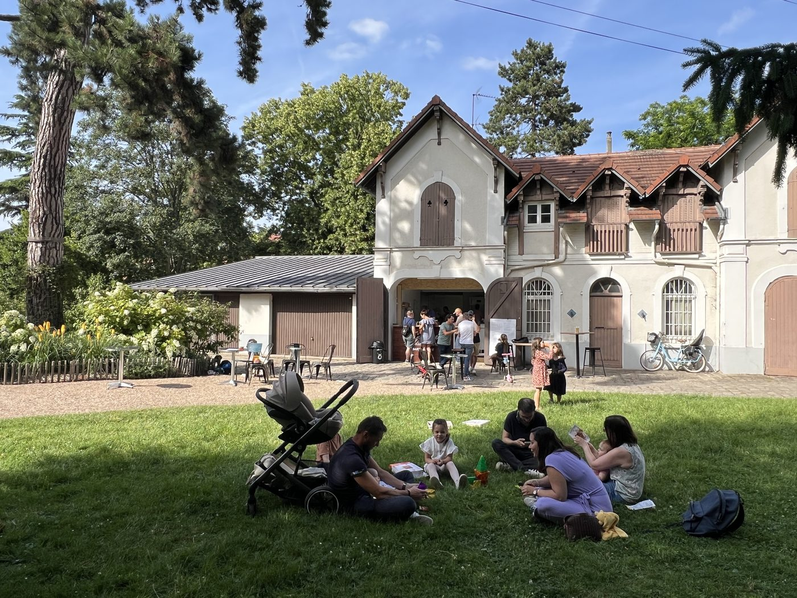

La boucle de Seine, autour de Sartrouville, regorge de coins agréables pour profiter des beaux jours. Voici nos idées de sorties — et le point de rendez-vous parfait pour terminer la journée.
Se balader au bord de la Seine
Entre Sartrouville, Houilles, Le Mesnil-le-Roi et Maisons-Laffitte, les berges de Seine offrent de belles balades à pied ou à vélo. L'eau, les arbres et la lumière de fin d'après-midi : difficile de faire plus dépaysant à quelques minutes de Paris.

Profiter du Parc du Dispensaire
En plein centre de Sartrouville, le Parc du Dispensaire est un écrin de verdure idéal pour une pause en famille. On s'y promène, les enfants jouent, et l'on peut s'installer à la guinguette pour un rafraîchissement à l'ombre des arbres.
Une guinguette comme point de ralliement
Après la balade, cap sur La Guinguette du Dispensaire : bières pression, vins sélectionnés, planches et frites maison, le tout en terrasse. C'est l'adresse conviviale de la boucle de Seine, facilement accessible depuis Montesson, Houilles ou Maisons-Laffitte et bien desservie par le RER A. Jetez un œil à la carte avant de venir.
Idées de sorties selon l'envie
- En famille : parc, jeux de plein air (Mölkky, pétanque) et menu enfant à la guinguette.
- Entre amis : apéro en terrasse, planches à partager et concerts les soirs d'animation.
- En amoureux : balade au bord de l'eau puis un verre de vin au coucher du soleil.
Envie de pousser la porte ?
Réservez votre table dans le parc ou jetez un œil à la carte. On vous attend au Parc du Dispensaire, à Sartrouville.
Réserver une table Voir la carte